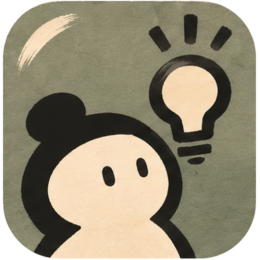

守拙主持代理
一个面向课程论证与研究协作的智能体工作台。七个功能席位分别承担主持、立论、澄清、问难、证据、异议与编辑。

登录后继续进入厅堂，当前浏览器会保存本地会话。
管理员账号由服务端初始化。生产环境请显式设置 HUITONG_ADMIN_PASSWORD，页面不会显示默认口令。一个主智能体，背后连接七席专家团队。
这里先展示个人智能体的任务入口和协作边界，不会发送你的输入到模型服务商。
探索版默认只做本地任务预览。进入七席会通后，才会沿用现有 room、participant token、live API 和 provenance 约束。
密钥只会发送到当前会通服务端。持久保存使用本机受保护配置文件；浏览器不会再次读取明文密钥。
当前席位 · 当前房间
这些设置只改变表达方式、提醒强度和反馈节奏。角色身份、席位职责、证据规则、阶段责任、系统安全规则和 live API 约束由服务端锁定。